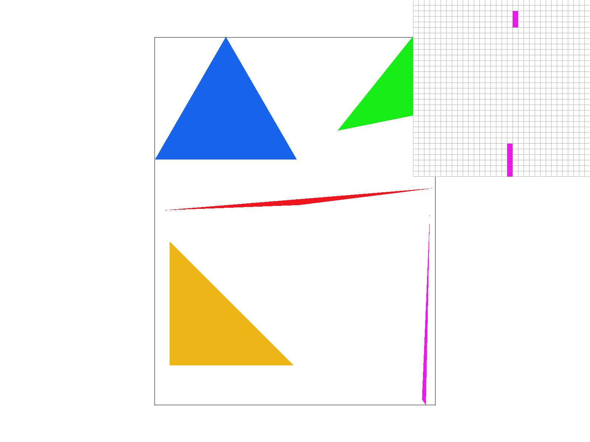
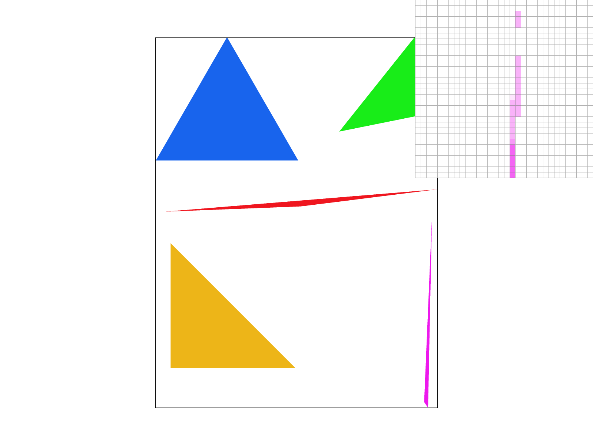
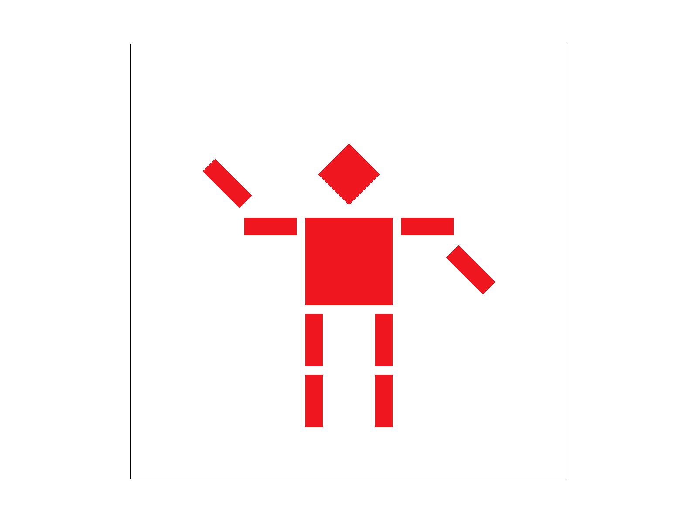
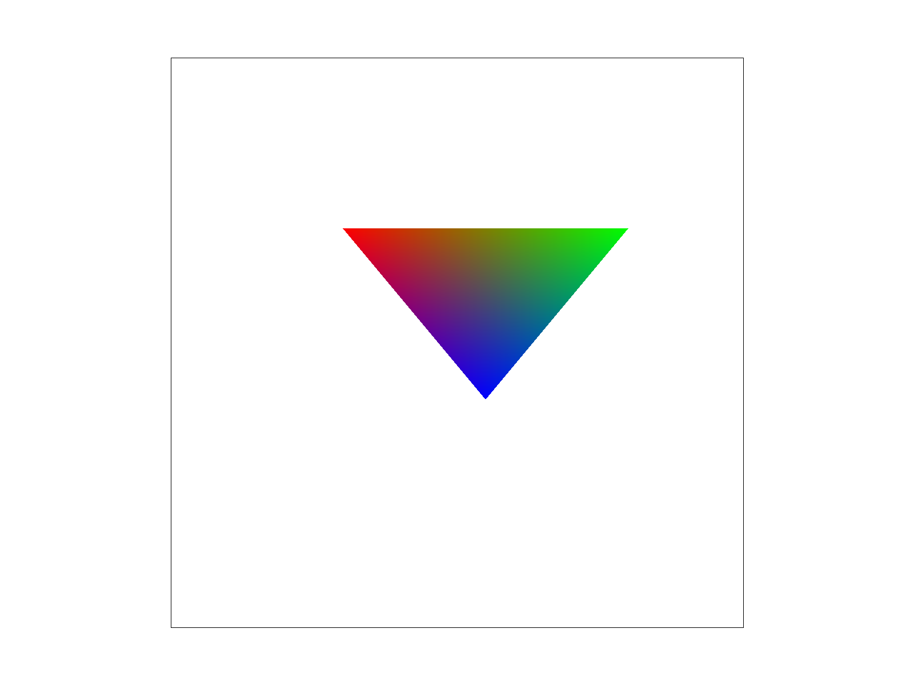
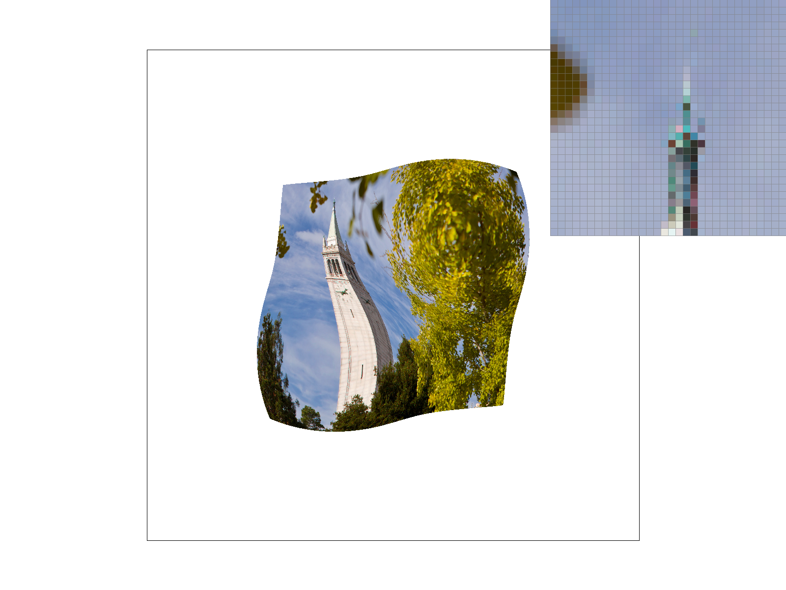
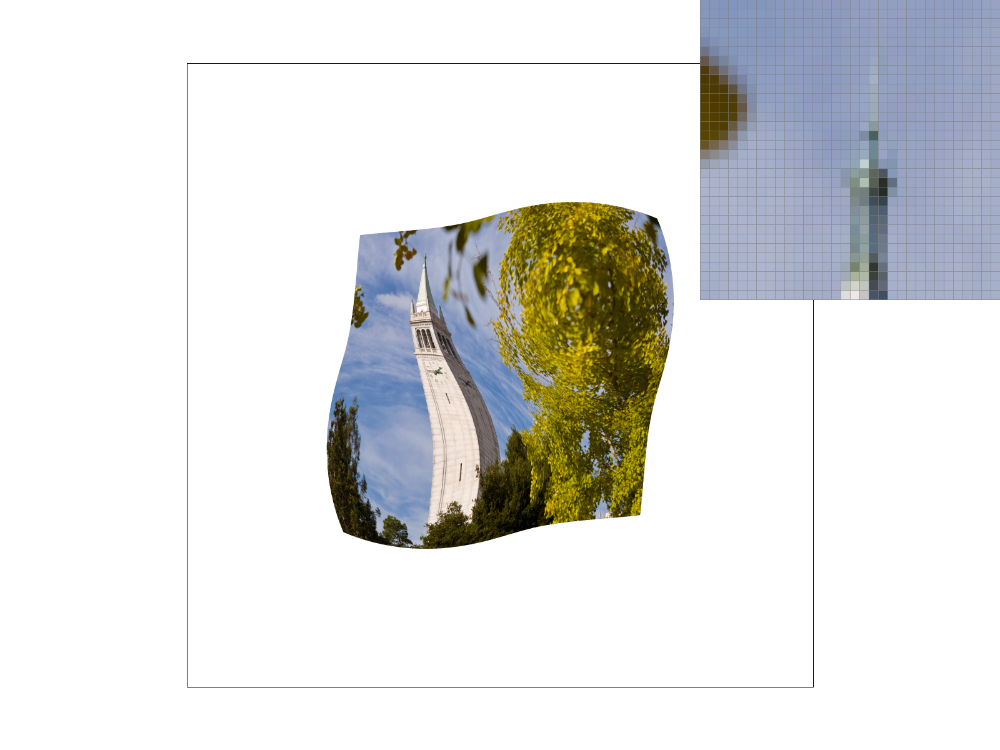
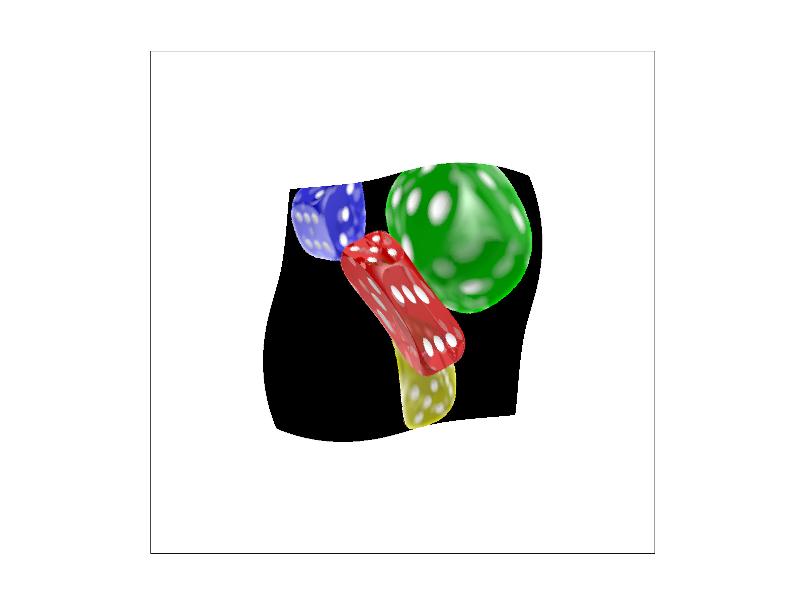

Task 1: I first began by preprocessing the triangle vertices to be ordered in clockwise direction. This would allow the computed normal vectors to be pointing inwards. Then I compute the tightest bounding box around the triangle by checking for the min and max values for x and y coordinates of the vertices. Finally, we iterate through every point in this bounding box and perform a line test to check if that point is within the triangle. If it is, we fill in the pixel with the given color, otherwise do nothing. This is atleast the same as checking each sample within the bounding box in terms of efficiency.
Task 2 To implement super sampling, I introduce another for loop to loop over the divisions within one pixel. In regards to data structure, since we are sampling “sampling_rate” times per pixel, we then require a buffer that can store sampling_rate times more samples than before. Thus we must make sure to appropriately resize. Supersampling allows to anti alias our triangles by approximating a 1 pixel box convolution thus reducing the effect of high frequencies within our image, such as the ends of tilted triangles. The reason these results appear is that by super sampling we have more information at the sub-pixel and can weigh/average the samples thus producing a blurring effect.
Task 3 I rotated the forearms to have the cubeman do an arm wave.
Task 4 Barycentric coordinates can be interpreted as the weight each respective vertex has on the point. For example, if we use color to visualize this we see below that a point in the triangle alpha beta gamma aligned with the red green blue vertices respectively. Alpha represents the distance from the blue green edge, and thus the power of red on any given point. If alpha = 1 then we lie on the red vertex and thus are the most red possible.
Task 5 The pixel sampling for texture mapping follows a similar algorithm to the other rasterization methods. The difference however is that we must use the barycentric coordinates of the point to compute the corresponding pixel on the texture plane. We do this by taking the dot product between the barycentric coordinates and the u and v vectors to find our point in the u v vector space. We then use this to sample from the texture map and fill in the color for that x, y point in the normal image plane. Nearest sampling simply finds the closest pixel to the computed sample coordinates since these coordinates are not guaranteed to be integer valid due to differences between the texture and image planes. Bilinear attempts to retain more texture information by accounting for this imprecise sampling and using distance and color of the four closest pixels to compute a weighted average. This is done by first performing a lerp between pairs of points horizontally, then taking the two results computing another lerp to find the final weighted average.
 Task 6 To implement level sampling, I first had to implement the get_level method. This would allow me to compute the best level based on the rate of change between the current sampling pixel and its surrounding pixels. This allows me to improve rendering quality using textures of different resolutions wherever appropriate. For nearest sampling, I simply round to the nearest level clamped between 1 and the max mip level. For L_Linear, I compute a weighted average between the two closest levels (floor and ceil) with a lerp. This sampling method has the most overhead as it requires an extra computation. The next in speed would be L_Nearest which also requires us to compute the level. Finally, L_Zero is the fastest since we simply pass in level 0 to our pixel sampling method.
